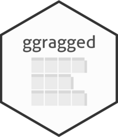

Changelog
Source:NEWS.md
ggragged 0.2.0
New features
- Facets gain a
stripsparameter to control how strips are drawn between panels. - Facets gain an
axesparameter to control how axes are drawn between panels. - Facets gain an
alignparameter to control how panels are positioned within rows/columns. - Added a vignette showing examples of usage in broader context.
Bug fixes
- Fixed an issue that caused some axes to be rendered incorrectly when using free scales with
coord_flip()(#2). - Fixed an issue that caused the package to fail to build (with an “argument is missing” error message) when an older version of ggplot2 was installed.